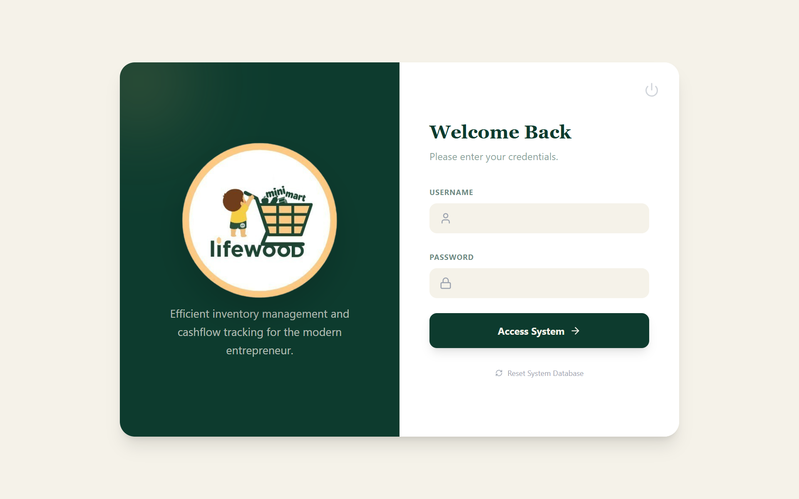
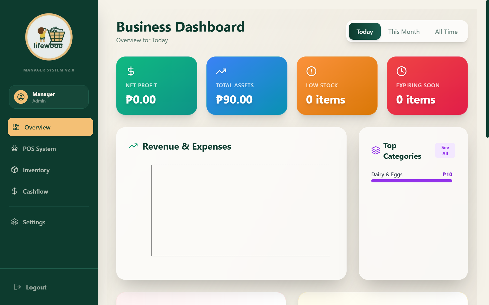
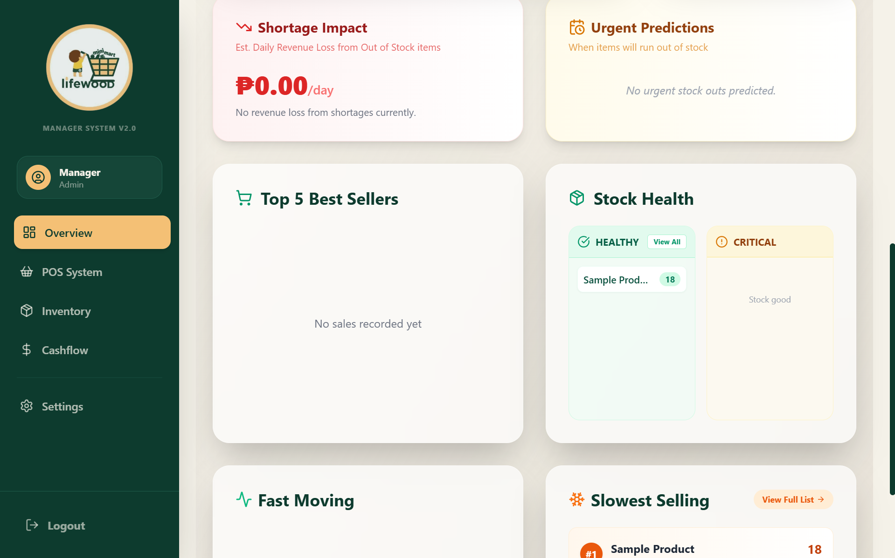
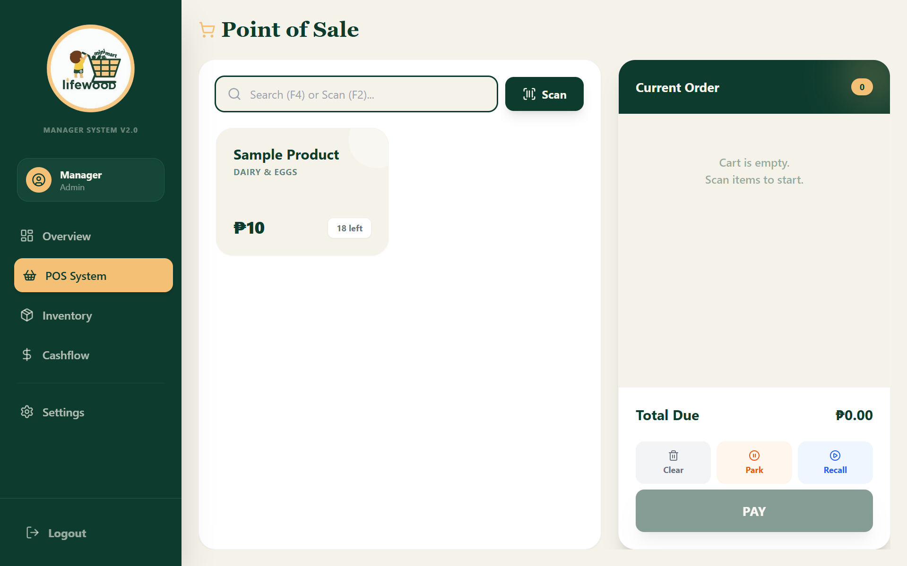
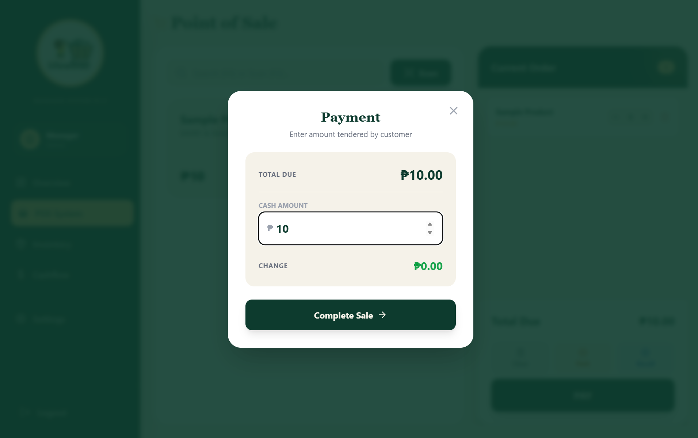
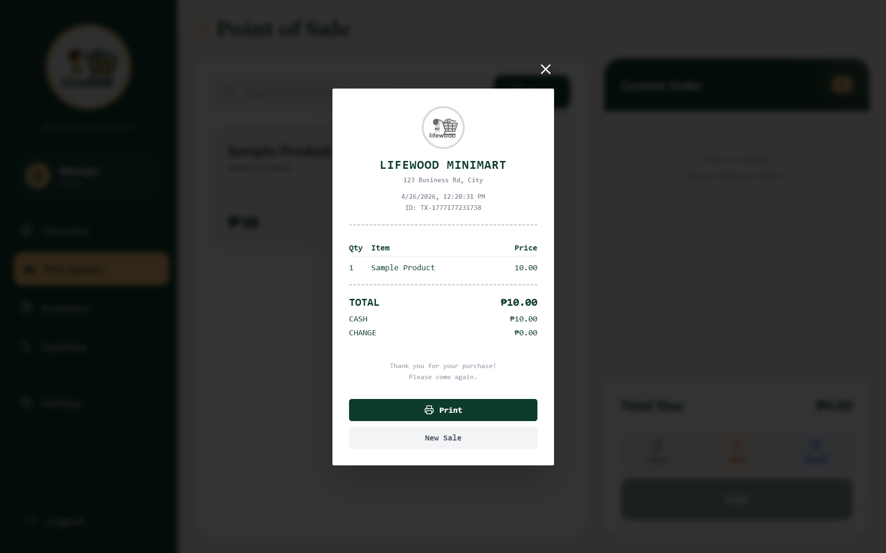
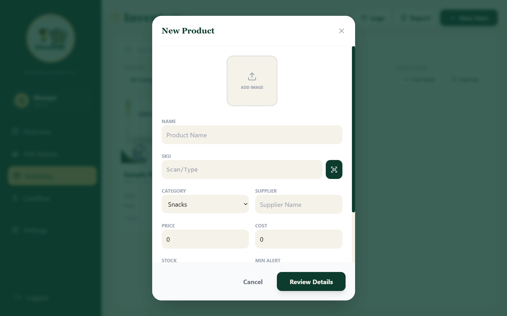
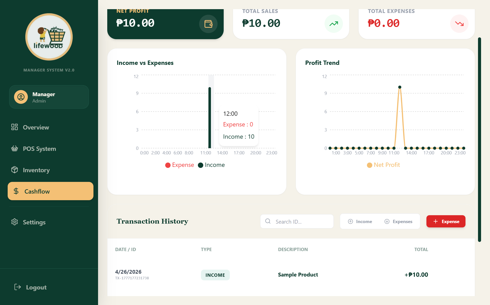
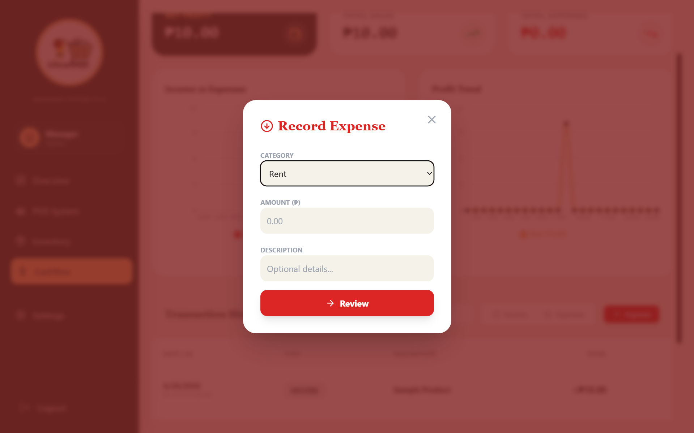
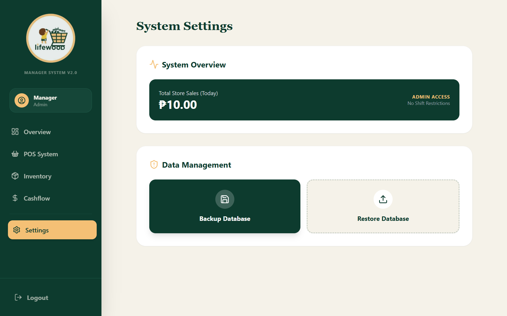
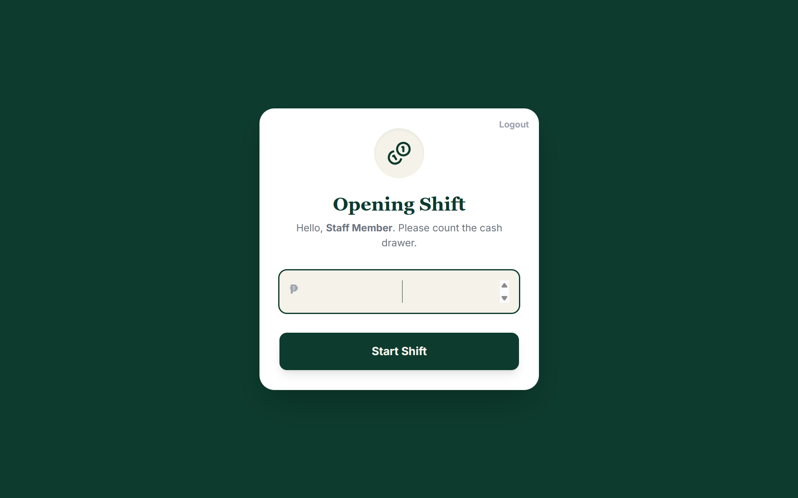
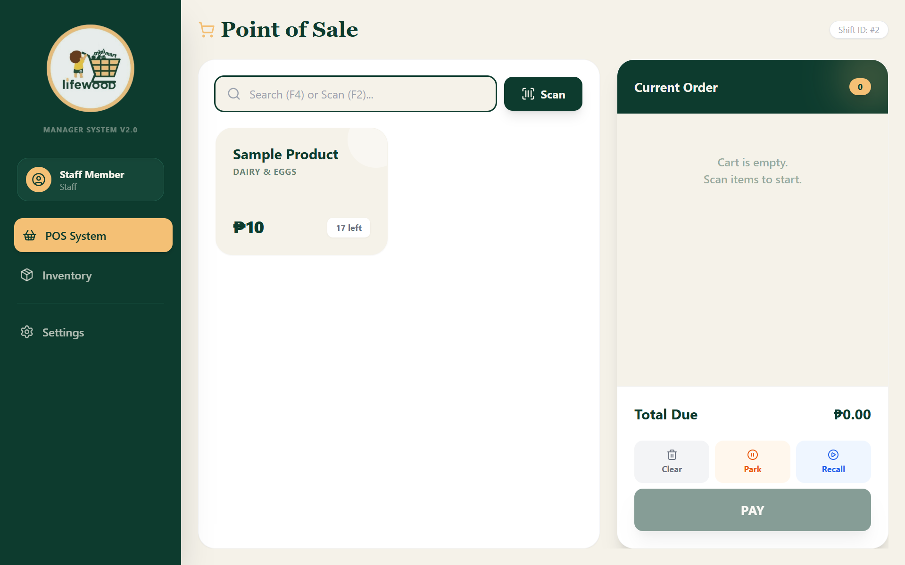
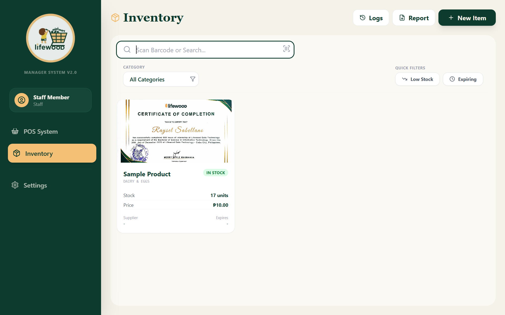
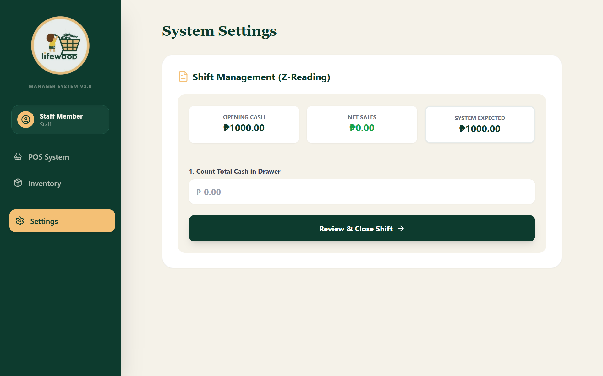
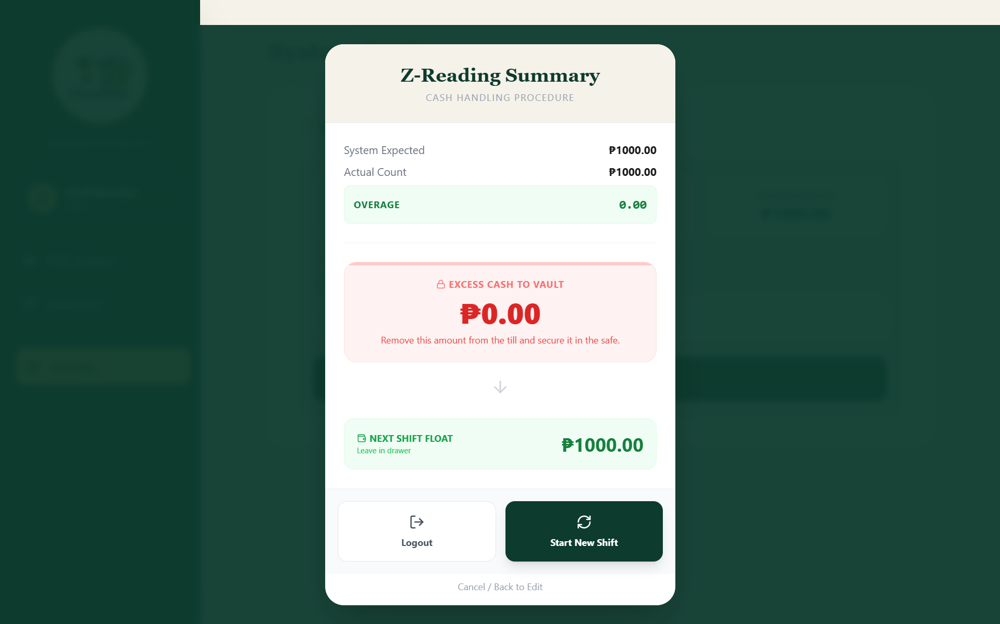
OVERVIEW
Project Overview
LW Mart Manager is a fully offline desktop application built for LW Mini Mart to replace manual, paper-based store operations with a fast, reliable, and structured digital system. It combines a Point-of-Sale (POS) terminal, real-time inventory management, shift-based cashflow tracking, and detailed financial reporting — all in one integrated application that works without internet connectivity.
The system supports two user roles — Admin and Staff — each with tailored access and controls. Staff can process sales and manage their shift, while Admins gain full visibility over store performance, inventory health, and financial data. The application is powered by IndexedDB for local data persistence, ensuring data is always available and never dependent on a server.
MY ROLE
- Project Manager
- System Lead
- UI/UX Designer
TECH STACK
KEY FEATURES
- POS with cart, barcode scanner (F2), product search (F4), and printable receipts
- Park & resume orders — save a transaction and return to it later
- Real-time inventory tracking with low stock and expiry date alerts
- Product write-off logging for damaged or expired goods
- Restock history and PDF inventory reports with store signature
- Shift management — open/close cash shifts with opening balance tracking
- Cashflow monitoring with income/expense breakdown (daily, weekly, monthly, all-time)
- AI-style predictive stock shortage alerts with estimated daily revenue loss
- Role-based access: Admin (full control) and Staff (shift-limited)
- Database backup and restore for data safety
- Fully offline — no internet required
PROBLEM → SOLUTION
Problem: The store relied on manual notebooks for tracking sales and inventory, leading to frequent stock errors, missing transaction records, and zero visibility into daily profits or losses.
Solution: Built a complete offline-first desktop system that automates sales processing, keeps inventory accurate in real time, logs every transaction, and generates detailed financial and inventory reports — replacing guesswork with data.
CHALLENGES
- Designing complex business logic (shift tracking, predictive stock alerts, write-offs) entirely on the client side without a backend
- Managing offline data relationships and consistency using IndexedDB (Dexie.js)
- Balancing feature scope and delivery within a 2-month timeline
- Crafting a UI that is intuitive enough for non-technical store staff to use daily
LEARNINGS
- Offline-first system design and local database management with Dexie.js (IndexedDB wrapper)
- Building desktop apps with Tauri — combining a React frontend with a Rust-powered shell
- Translating real-world business operations (shifts, restocks, cashflow) into working software logic
- Designing role-based access control and secure authentication with bcrypt password hashing
- UI/UX design for productivity tools — making dense data readable and interactions feel natural for everyday store use
- Project management: scoping features, prioritizing under time pressure, and making technical decisions independently